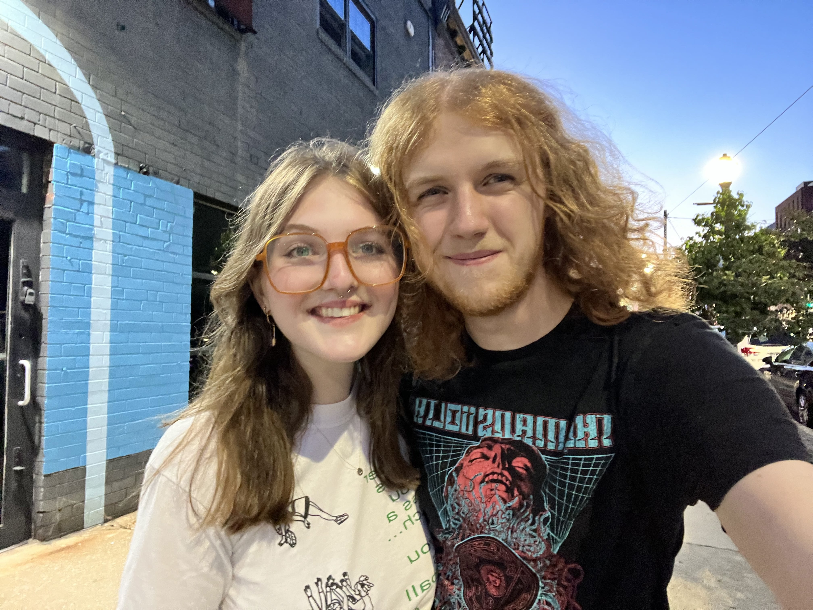
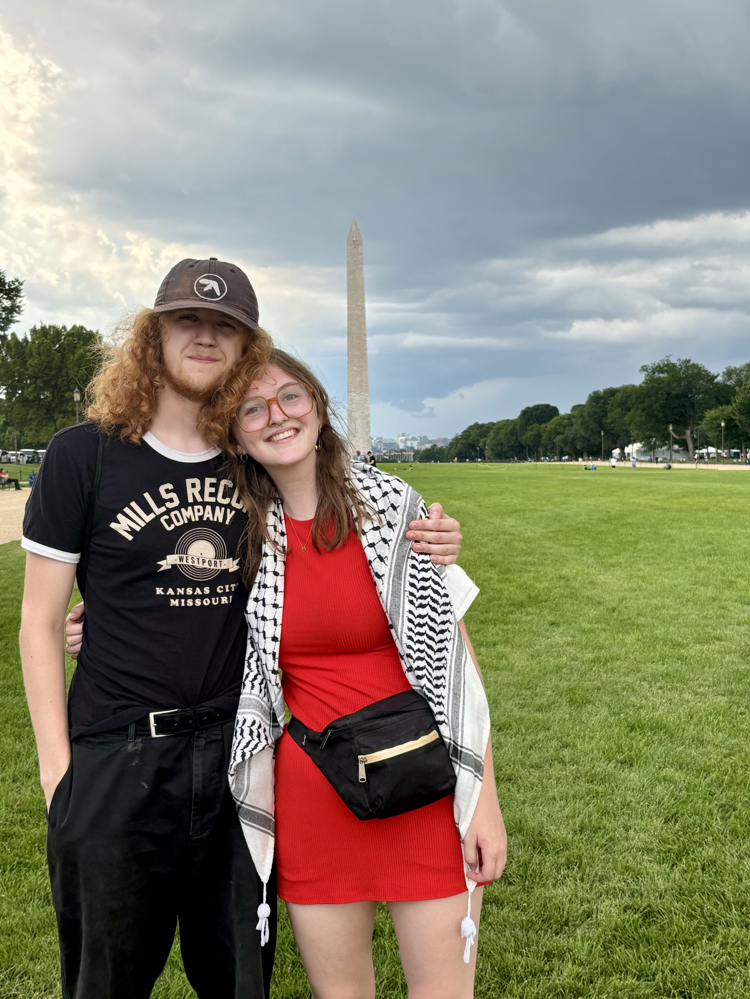
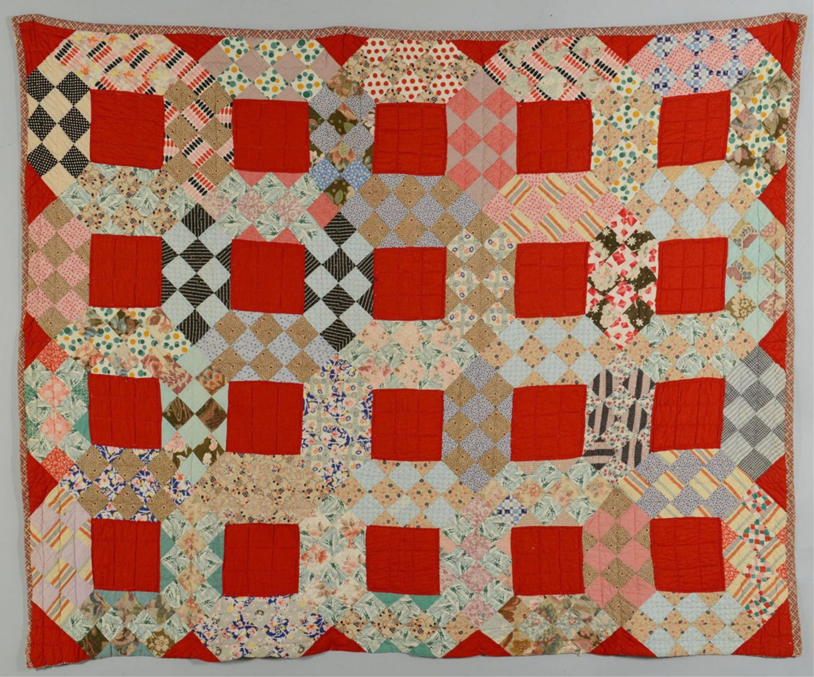
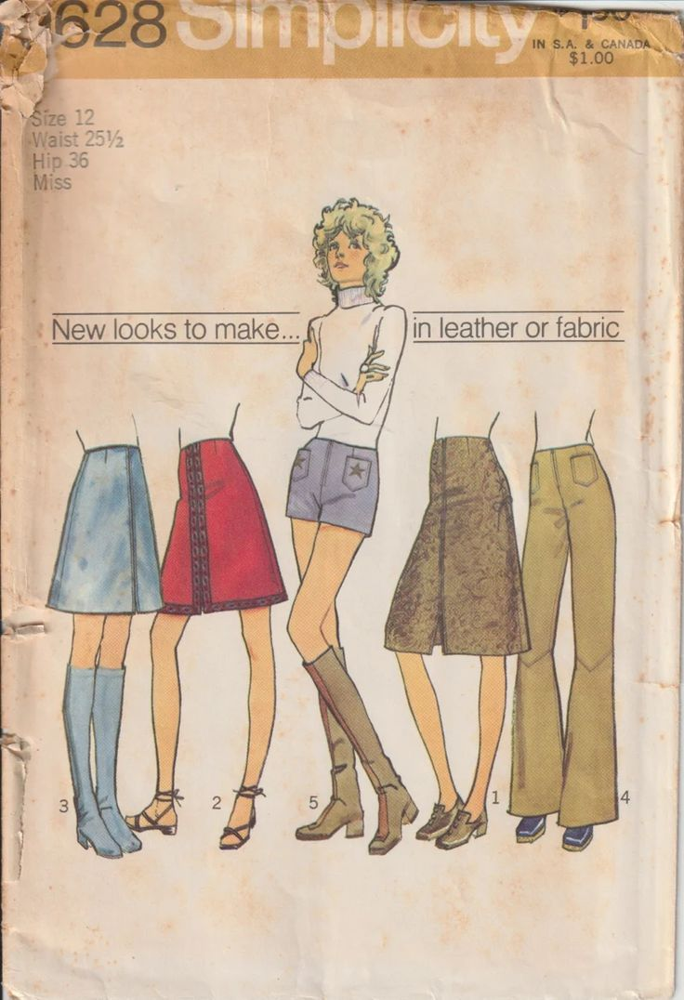
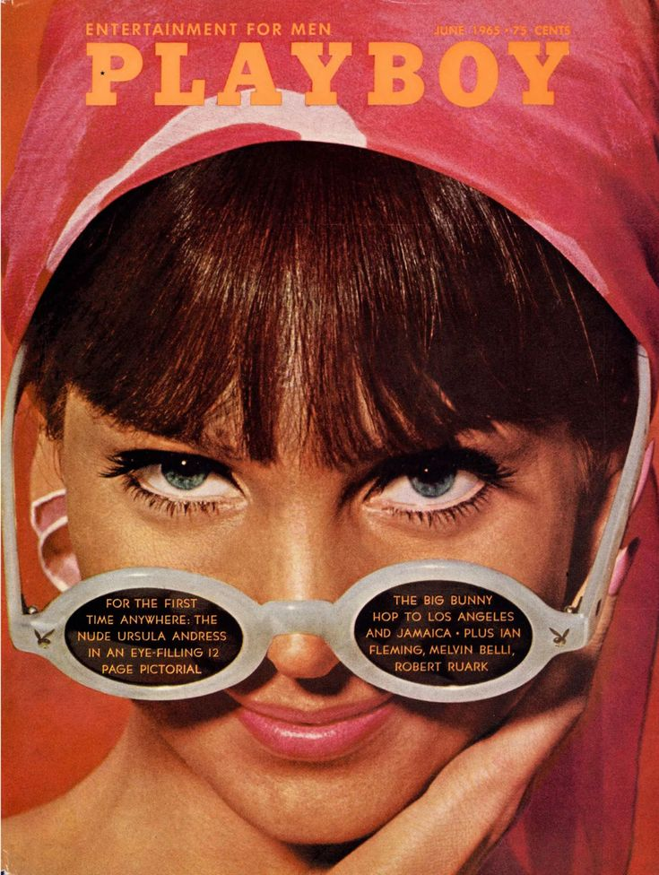
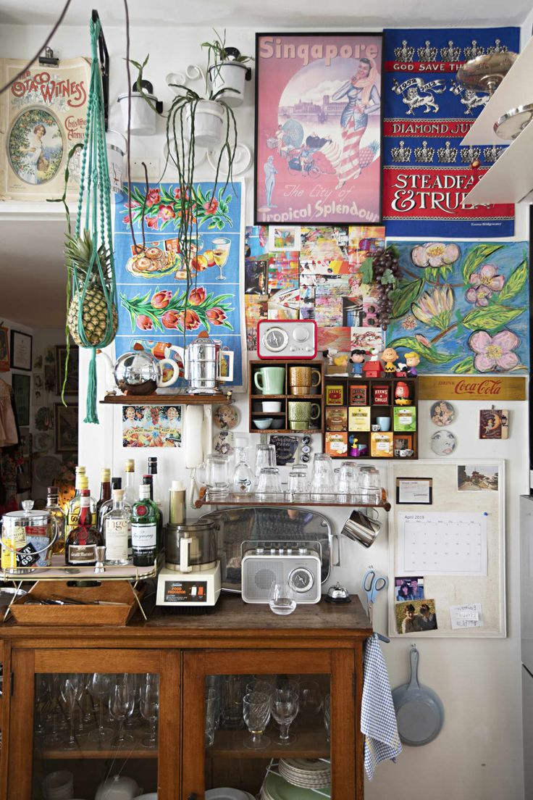
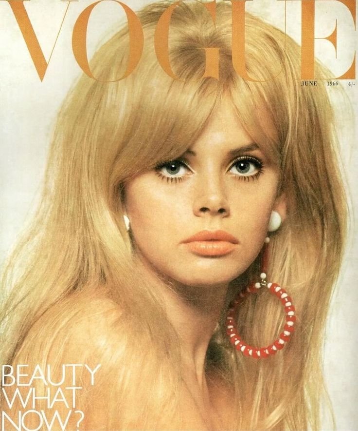

Field of Study
I am currently working towards a degree in History, with a minor in Sociology and certificate in Public and Professional Writing. When I first came to Pitt, I was declared as an English Writing Fiction major, but quickly realized that was not the place for me. I decided to pick up the PPW certificate as a way to keep writing after experiencing fiction burnout and am specifically interested in grant writing and graphic design—the latter mostly just for fun. While taking a general education Sociology class, I made a mentor in my professor who helped me carve out a new path in History and Sociology. I feel that these two fields embody my love for asking questions and stoke my passion for fighting for social justice, which is my thematic focus.

Knowledge, Tools, and Skills
Though I have little experience with graphic design, I am a creative with too many hobbies and a never ending stream of projects. I prefer to learn new skills to customize things to my liking instead of outsourcing a project to someone else, for everything from fixing my car to weaving a rug. My primary media are second hand textiles and fibers which I use to sew, knit, and crochet my own clothes and decor. Aesthetic is very important to me and I'm driven by the fact I can design almost anything to fit my style. I'm looking forward to exploring Adobe platforms more in this class because I think they will be useful tools to have in my toolbelt going forward—both personally and professionally. I'd really like to design some cool posters for my new apartment, so maybe I'll get a chance to do that here.

What is good design?
Good design to me is something that instantly catches my eye and makes me think, "wow, that looks good!" I find it hard to describe why I think something looks good or bad—something I'm excited to learn more about in this class—but I usually feel objective in whether my brain likes looking at whatever design is in front of me. That being said, I do think my design aesthetic is quite particular and I gravitate towards certain colors and aesthetics more than others. I'm inspired by Americana, 60s and 70s fashion and media, maximalism, and eclecticsm. Some qualities that I think are very important to good design include balance, contrast, and use of color.
***Add a Photo Grid***

![an architectural and interior design poster. The title is at the bottom of the poster in black text on a white background: The Delineator Sunshine House-Number 3. At the top of the image there is a drawing of a house exterior, using bright blue, red, and green. Under the house there are various pieces of furniture in the same bright colors, including a shelf, a chest, a bassinette, and two chairs. Above the title and below the exterior photo, there is a photo of the house interior, featuring a tiled fire place and bright blue dining nook with a chair and bench. >
</div>
<div class=](scandi.jpeg)




Good Design
In the Future
My concrete plans for the future are entirely unknown to me, but I am certain of a few things: I know that the corporate world is not for me; I know that I need a creative outlet in my life to feel like myself; I know that I want whatever work I do to allign with my values of people over profit, anti-facsism, and collective liberation. With my degrees and interests, I'm beginning to weigh the options of continuing my education either to stay in academia or pursue law. I think the hardest part of my decision making thus far has been trying to figure out how I can compile all of my interests into a field of work that I will enjoy and will keep me financially afloat—especially with Pitt draining any dreams of a debt-free existence right before my eyes. I've even thought about picking up a trade. More than anything, I just want to be able to live a loving existence with my partner, enjoy beautiful art, feel intellectually stimulated, and know that the work I do contributes to a better society. I think this class is going to teach me a lot of skills that will feed my creative and intellectual needs, and perhaps will even broaden my horizons in the professional world.


generated by Pitt Fuego
Why make a spark when you can light a fire?